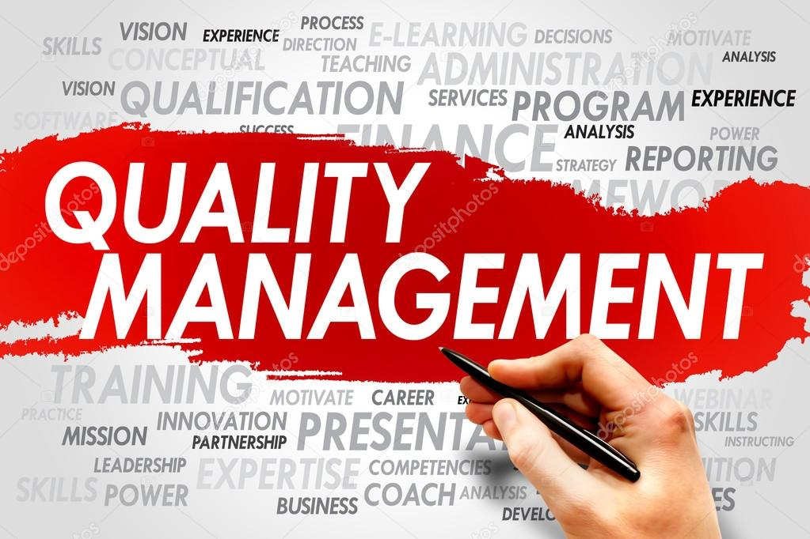

What We offer
-
website design

I design websites for global businesses. Clean, modern designs-optimized for performance, search engines, and converting users to customers.I am ready to assist you at every stage of the software development life circle.
-
Data Entry

I maintain websites, servicing and troubleshooting
-
QMS audit /documentation training
Get trained in QMS audit processes to the certication stage. Learn proper way of Process documentation from scratch.